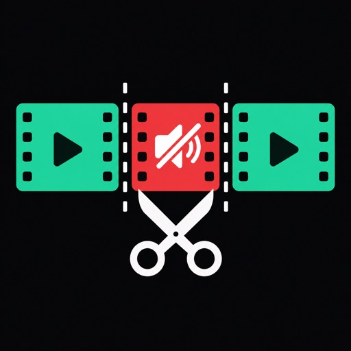

App Store Companion Page

Video Silence Remover
Import a video, remove dead air, preview the cut, and save or share a shorter result without sending your clip to a developer-run server.
- Cut silent pauses
- Remove dead air
- Preview before saving
- Processed on iPhone